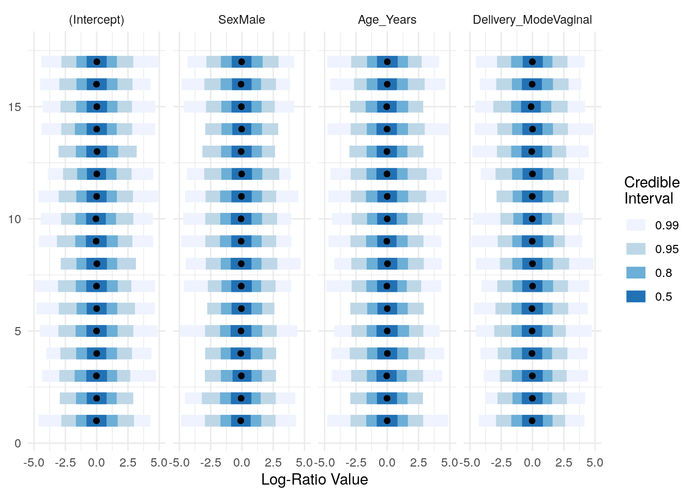

knitr::opts_chunk$set(eval=TRUE, warning=FALSE, message=FALSE)Appendix A — Extra material
A.1 Slides
Outreach material includes slide sets for training events.
A.2 PERMANOVA comparison
Here we present two possible uses of the adonis2 function which performs PERMANOVA. The optional argument by has an effect on the statistical outcome, so its two options are compared here.
Let us load the enterotype TSE object and run PERMANOVA for different orders of three variables with two different approaches: by = "margin" or by = "terms".
# load and prepare data
library(mia)
data("enterotype", package="mia")
enterotype <- transformAssay(enterotype, method = "relabundance")
# drop samples missing meta data
enterotype <- enterotype[ , !rowSums(is.na(colData(enterotype)[, c("Nationality", "Gender", "ClinicalStatus")]) > 0)]
# define variables and list all possible combinations
vars <- c("Nationality", "Gender", "ClinicalStatus")
var_perm <- permutations(n = 3, r = 3, vars)
formulas <- apply(var_perm, 1, function(row) purrr::reduce(row, function(x, y) paste(x, "+", y)))
# create empty data.frames for further storing p-values
terms_df <- data.frame("Formula" = formulas,
"ClinicalStatus" = rep(0, 6),
"Gender" = rep(0, 6),
"Nationality" = rep(0, 6))
margin_df <- data.frame("Formula" = formulas,
"ClinicalStatus" = rep(0, 6),
"Gender" = rep(0, 6),
"Nationality" = rep(0, 6))for (row_idx in 1:nrow(var_perm)) {
# generate temporary formula (i.e. "assay ~ ClinicalStatus + Nationality + Gender")
tmp_formula <- purrr::reduce(var_perm[row_idx, ], function(x, y) paste(x, "+", y))
tmp_formula <- as.formula(paste0('t(assay(enterotype, "relabundance")) ~ ',
tmp_formula))
# multiple variables, default: by = "terms"
set.seed(75)
with_terms <- adonis2(tmp_formula,
by = "terms",
data = colData(enterotype),
permutations = 99)
# multiple variables, by = "margin"
set.seed(75)
with_margin <- adonis2(tmp_formula,
by = "margin",
data = colData(enterotype),
permutations = 99)
# extract p-values
terms_p <- with_terms[["Pr(>F)"]]
terms_p <- terms_p[!is.na(terms_p)]
margin_p <- with_margin[["Pr(>F)"]]
margin_p <- margin_p[!is.na(margin_p)]
# store p-values into data.frames
for (col_idx in 1:ncol(var_perm)) {
terms_df[var_perm[row_idx, col_idx]][row_idx, ] <- terms_p[col_idx]
margin_df[var_perm[row_idx, col_idx]][row_idx, ] <- margin_p[col_idx]
}
}The following table displays the p-values for the three variables ClinicalStatus, Gender and Nationality obtained by PERMANOVA with adonis2. Note that the p-values remain identical when by = "margin", but change with the order of the variables in the formula when by = "terms" (default).
df <- terms_df %>%
dplyr::inner_join(margin_df, by = "Formula", suffix = c(" (terms)", " (margin)"))
knitr::kable(df)| Formula | ClinicalStatus (terms) | Gender (terms) | Nationality (terms) | ClinicalStatus (margin) | Gender (margin) | Nationality (margin) |
|---|---|---|---|---|---|---|
| ClinicalStatus + Gender + Nationality | 0.20 | 0.70 | 0.04 | 0.53 | 0.29 | 0.04 |
| ClinicalStatus + Nationality + Gender | 0.20 | 0.29 | 0.05 | 0.53 | 0.29 | 0.04 |
| Gender + ClinicalStatus + Nationality | 0.17 | 0.79 | 0.04 | 0.53 | 0.29 | 0.04 |
| Gender + Nationality + ClinicalStatus | 0.53 | 0.79 | 0.03 | 0.53 | 0.29 | 0.04 |
| Nationality + ClinicalStatus + Gender | 0.61 | 0.29 | 0.04 | 0.53 | 0.29 | 0.04 |
| Nationality + Gender + ClinicalStatus | 0.53 | 0.39 | 0.04 | 0.53 | 0.29 | 0.04 |
A.3 Bayesian Multinomial Logistic-Normal Models
Analysis using such model could be performed with the function pibble from the fido package, wihch is in form of a Multinomial Logistic-Normal Linear Regression model; see vignette of package.
The following presents such an exemplary analysis based on the data of Sprockett et al. (2020) available through microbiomeDataSets package.
Sprockett, Daniel D., Melanie Martin, Elizabeth K. Costello, Adam R. Burns, Susan P. Holmes, Michael D. Gurven, and David A. Relman. 2020. “Microbiota Assembly, Structure, and Dynamics Among Tsimane Horticulturalists of the Bolivian Amazon.” Nat Commun 11 (1): 3772. https://doi.org/10.1038/s41467-020-17541-6.
Loading the libraries and importing data:
library(microbiomeDataSets)
tse <- SprockettTHData()We pick three covariates (“Sex”,“Age_Years”,“Delivery_Mode”) during this analysis as an example, and beforehand we check for missing data:
We drop missing values of the covariates:
We agglomerate microbiome data to Phylum:
tse_phylum <- mergeFeaturesByRank(tse, "Phylum")We extract the counts assay and covariate data to build the model matrix:
Y <- assays(tse_phylum)$counts
# design matrix
# taking 3 covariates
sample_data<-as.data.frame(colData(tse_phylum)[,cov_names])
X <- t(model.matrix(~Sex+Age_Years+Delivery_Mode,data=sample_data))Building the parameters for the pibble call to build the model; see more at vignette:
Automatically initializing the priors and visualizing their distributions:
priors <- pibble(NULL, X, upsilon, Theta, Gamma, Xi)
names_covariates(priors) <- rownames(X)
plot(priors, pars="Lambda") + ggplot2::xlim(c(-5, 5))
Estimating the posterior by including our response data Y. Note: Some computational failures could occur (see discussion) the arguments multDirichletBoot calcGradHess could be passed in such case.
priors$Y <- Y
posterior <- refit(priors, optim_method="adam", multDirichletBoot=0.5) #calcGradHess=FALSEPrinting a summary about the posterior:
ppc_summary(posterior)
## Proportions of Observations within 95% Credible Interval: 0.9986924Plotting the summary of the posterior distributions of the regression parameters:
names_categories(posterior) <- rownames(Y)
plot(posterior,par="Lambda",focus.cov=rownames(X)[2:4])Taking a closer look at “Sex” and “Delivery_Mode”:
A.4 Interactive 3D Plots
library(knitr)
knitr::knit_hooks$set(webgl = hook_webgl)In this section we make a 3D version of the earlier PCoA plot (see @ref(quality-control)), with the help of the plotly (Sievert 2020).
Sievert, Carson. 2020. Interactive Web-Based Data Visualization with r, Plotly, and Shiny. Chapman; Hall/CRC. https://plotly-r.com.
# Importing necessary libraries
library(curatedMetagenomicData)
library(dplyr)
library(DT)
library(mia)
library(scater)
# Querying the data
tse <- sampleMetadata %>%
filter(age >= 18) %>% # taking only data of age 18 or above
filter(!is.na(alcohol)) %>% # excluding missing values
returnSamples("relative_abundance")
tse_Genus <- mergeFeaturesByRank(tse, rank="genus")
# Performing PCoA with Bray-Curtis dissimilarity.
tse_Genus <- runMDS(tse_Genus, #adds reduced dimensionalities to tse_Genus
FUN = vegan::vegdist,
method = "bray",
ncomponents = 3, # calculates three principal coordinates
assay.type = "relative_abundance", # calculates Bray-Curtis from relative abundace
name = "MDS_bray") #name of the PCoA within the tse
e <- attr(reducedDim(tse_Genus, "MDS_bray"), "eig")
rel_eig <- e / sum(e[e > 0])
# Extract the coordinates as a dataframe
coordinates <- as.data.frame(reducedDim(tse_Genus,"MDS_bray"))
head(coordinates)
## V1 V2 V3
## WBE003 -0.5769316 -0.4328139 0.002308174
## WBE004 -0.6121048 -0.4545244 -0.016074042
## WBE005 -0.6136886 -0.4576692 -0.017594720
## WBE006 -0.6224470 -0.4656826 -0.017978475
## WBE007 -0.5913884 -0.4358862 -0.017646607
## WBE008 -0.5896124 -0.4343091 -0.016748598
# plot the coordinates using plotly and add the explained variance to the axes
plot_ly(coordinates, x = ~V1, y = ~V2, z = ~V3, color = ~V3) %>%
add_markers() %>%
layout(
scene = list(
xaxis = list(title = paste("PCoA 1 (", round(100 * rel_eig[1], 1), "%)", sep = "")),
yaxis = list(title = paste("PCoA 2 (", round(100 * rel_eig[2], 1), "%)", sep = "")),
zaxis = list(title = paste("PCoA 3 (", round(100 * rel_eig[3], 1), "%)", sep = ""))
)
)A.5 phyloseq vs TreeSE cheatsheet
This section has a cheatsheet for translating common functions in phyloseq to TreeSE/mia with example code.
Start by loading data as a phyloseq object phy and as TreeSE object tse.
# Loading example data
# Using GlobalPatterns dataset
data(package = "phyloseq", "GlobalPatterns") # phyloseq object
phy <- GlobalPatterns # Rename
phy # Check the phyloseq object
## phyloseq-class experiment-level object
## otu_table() OTU Table: [ 19216 taxa and 26 samples ]
## sample_data() Sample Data: [ 26 samples by 7 sample variables ]
## tax_table() Taxonomy Table: [ 19216 taxa by 7 taxonomic ranks ]
## phy_tree() Phylogenetic Tree: [ 19216 tips and 19215 internal nodes ]
data(package = "mia", "GlobalPatterns") # TreeSE object
tse <- GlobalPatterns # Rename
tse # Check the tse object
## class: TreeSummarizedExperiment
## dim: 19216 26
## metadata(0):
## assays(1): counts
## rownames(19216): 549322 522457 ... 200359 271582
## rowData names(7): Kingdom Phylum ... Genus Species
## colnames(26): CL3 CC1 ... Even2 Even3
## colData names(7): X.SampleID Primer ... SampleType Description
## reducedDimNames(0):
## mainExpName: NULL
## altExpNames(0):
## rowLinks: a LinkDataFrame (19216 rows)
## rowTree: 1 phylo tree(s) (19216 leaves)
## colLinks: NULL
## colTree: NULLA.5.1 Accessing different types of data in phyloseq versus TreeSE
Often microbiome datasets contain three different types of tables, one which defines the microbes’ taxonomy from domain to species level, one that describes sample level information like whether the sample is from a healthy or a diseased person, and one that has the abundances of taxa from mapping, like an OTU table.
There are slightly different names for these tables in phyloseq and tse, but they can be retrieved from the phyloseq and tse containers in analogous ways.
Accessing the table of taxonomic names: tax_table = rowData
phyloseq and TreeSE objects’ taxonomy tables can be accessed with tax_table and rowData commands.
Accessing sample data: sample_data = colData
Sample data can be accessed with sample_data and colData commands.
phy_sampledata <-
sample_data(phy) %>% data.frame
tse_sampledata <-
colData(tse) %>% data.frameAccessing operational taxonomic unit (OTU) abundance objects: otu_table = assay
OTU tables can be accessed with otu_table and assay commands. The assay can also hold other types of information like taxa abundances from shotgun metagenomic annotation, or functional gene abundances.
A.5.2 Building phyloseq objects vs TreeSE objects: phyloseq = TreeSummarizedExperiment
After learning how to access various data types from TreeSE, let’s see how creating TreeSE objects compares to creating phyloseq objects. We will use the vanilla dataframes we created from the phyloseq object to demonstrate making both types of data objects. These are identical to the equivalent tse dataframes but for demonstration we will use ones created from phy.
Let’s start by checking what we have.
phy_otutable %>% head
## CL3 CC1 SV1 M31Fcsw M11Fcsw M31Plmr M11Plmr F21Plmr M31Tong M11Tong
## 549322 0 0 0 0 0 0 0 0 0 0
## 522457 0 0 0 0 0 0 0 0 0 0
## 951 0 0 0 0 0 0 1 0 0 0
## 244423 0 0 0 0 0 0 0 0 0 0
## 586076 0 0 0 0 0 0 0 0 0 0
## 246140 0 0 0 0 0 0 0 0 0 0
## LMEpi24M SLEpi20M AQC1cm AQC4cm AQC7cm NP2 NP3 NP5 TRRsed1 TRRsed2
## 549322 0 1 27 100 130 1 0 0 0 0
## 522457 0 0 0 2 6 0 0 0 0 0
## 951 0 0 0 0 0 0 0 0 0 0
## 244423 0 0 0 22 29 0 0 0 0 0
## 586076 0 0 0 2 1 0 0 0 0 0
## 246140 0 0 0 1 3 0 0 0 0 0
## TRRsed3 TS28 TS29 Even1 Even2 Even3
## 549322 0 0 0 0 0 0
## 522457 0 0 0 0 0 0
## 951 0 0 0 0 0 0
## 244423 0 0 0 0 0 0
## 586076 0 0 0 0 0 0
## 246140 0 0 0 0 0 0
phy_sampledata %>% head
## X.SampleID Primer Final_Barcode Barcode_truncated_plus_T
## CL3 CL3 ILBC_01 AACGCA TGCGTT
## CC1 CC1 ILBC_02 AACTCG CGAGTT
## SV1 SV1 ILBC_03 AACTGT ACAGTT
## M31Fcsw M31Fcsw ILBC_04 AAGAGA TCTCTT
## M11Fcsw M11Fcsw ILBC_05 AAGCTG CAGCTT
## M31Plmr M31Plmr ILBC_07 AATCGT ACGATT
## Barcode_full_length SampleType
## CL3 CTAGCGTGCGT Soil
## CC1 CATCGACGAGT Soil
## SV1 GTACGCACAGT Soil
## M31Fcsw TCGACATCTCT Feces
## M11Fcsw CGACTGCAGCT Feces
## M31Plmr CGAGTCACGAT Skin
## Description
## CL3 Calhoun South Carolina Pine soil, pH 4.9
## CC1 Cedar Creek Minnesota, grassland, pH 6.1
## SV1 Sevilleta new Mexico, desert scrub, pH 8.3
## M31Fcsw M3, Day 1, fecal swab, whole body study
## M11Fcsw M1, Day 1, fecal swab, whole body study
## M31Plmr M3, Day 1, right palm, whole body study
phy_taxtable %>% head
## Kingdom Phylum Class Order Family
## 549322 Archaea Crenarchaeota Thermoprotei <NA> <NA>
## 522457 Archaea Crenarchaeota Thermoprotei <NA> <NA>
## 951 Archaea Crenarchaeota Thermoprotei Sulfolobales Sulfolobaceae
## 244423 Archaea Crenarchaeota Sd-NA <NA> <NA>
## 586076 Archaea Crenarchaeota Sd-NA <NA> <NA>
## 246140 Archaea Crenarchaeota Sd-NA <NA> <NA>
## Genus Species
## 549322 <NA> <NA>
## 522457 <NA> <NA>
## 951 Sulfolobus Sulfolobusacidocaldarius
## 244423 <NA> <NA>
## 586076 <NA> <NA>
## 246140 <NA> <NA>Ok, these are all normal data frames which could come from upstream bioinformatics, like OTU tables that come from 16S analysis, and taxonomy tables.
Let’s demo how to create the treeSE object, how it compares to creating phyloseq and how assay in treeSE compares to otu_table in phyloseq.
# Create phyloseq object
OTU_phy <- otu_table(phy_otutable %>% as.matrix, taxa_are_rows = TRUE) # Make OTU table
TAX_phy <- tax_table(phy_taxtable %>% as.matrix) # Make TAX table
SAMPLE_phy <- sample_data(phy_sampledata) # Make sample data table
phy <- phyloseq(OTU_phy, TAX_phy, SAMPLE_phy) # Combine into phyloseq object
phy # Inspect
## phyloseq-class experiment-level object
## otu_table() OTU Table: [ 19216 taxa and 26 samples ]
## sample_data() Sample Data: [ 26 samples by 7 sample variables ]
## tax_table() Taxonomy Table: [ 19216 taxa by 7 taxonomic ranks ]Let’s start by checking our otu table, and see if it is counts or already normalized. We will use the same data frame extracted from the phy object as before.
# Check if we have counts or normalized data
phy_otutable %>% head
## CL3 CC1 SV1 M31Fcsw M11Fcsw M31Plmr M11Plmr F21Plmr M31Tong M11Tong
## 549322 0 0 0 0 0 0 0 0 0 0
## 522457 0 0 0 0 0 0 0 0 0 0
## 951 0 0 0 0 0 0 1 0 0 0
## 244423 0 0 0 0 0 0 0 0 0 0
## 586076 0 0 0 0 0 0 0 0 0 0
## 246140 0 0 0 0 0 0 0 0 0 0
## LMEpi24M SLEpi20M AQC1cm AQC4cm AQC7cm NP2 NP3 NP5 TRRsed1 TRRsed2
## 549322 0 1 27 100 130 1 0 0 0 0
## 522457 0 0 0 2 6 0 0 0 0 0
## 951 0 0 0 0 0 0 0 0 0 0
## 244423 0 0 0 22 29 0 0 0 0 0
## 586076 0 0 0 2 1 0 0 0 0 0
## 246140 0 0 0 1 3 0 0 0 0 0
## TRRsed3 TS28 TS29 Even1 Even2 Even3
## 549322 0 0 0 0 0 0
## 522457 0 0 0 0 0 0
## 951 0 0 0 0 0 0
## 244423 0 0 0 0 0 0
## 586076 0 0 0 0 0 0
## 246140 0 0 0 0 0 0We have counts!
Since TreeSEs can hold many different versions of the OTU table, most commonly either relative abundances or counts, we will need to give our assay (which corresponds to otu_table in Phyloseq) a name and list the different types of assays or transformations we have. In this example we only have one item ‘counts’ in the list.
Let’s convert the data frame to a matrix and make the list of assays.
# Create TreeSE
counts <- as.matrix(phy_otutable) # Convert to a matrix
assays <- SimpleList(counts = counts)
tse <- TreeSummarizedExperiment(assays = assays,
colData = phy_sampledata,
rowData = phy_taxtable
)Let’s check the different assay names we have.
assayNames(tse)
## [1] "counts"A.5.3 Handling different OTU table normalizations in phyloseq vs TreeSE
Adding the assays as a list might seem inconvenient if you only have one type of OTU table (counts in our example), but let’s see why it is actually very convenient to be able to hold multiple assays in one data object.
Here we’ll show an example of how to add relative abundances and CLR normalized OTU tables to your tse assays.
With phyloseq you would need three different phyloseq objects, each taking up 7.7 MB of memory, whilst the tse with the three assays takes up only 18.3 MB.
# Add another assay that holds the relative abundance normalized OTU table
tse <-
transformAssay(tse, assay.type = "counts", method = "relabundance")
assays(tse) # Let's check
## List of length 2
## names(2): counts relabundance
# With phyloseq you would need to have two different phyloseq objects
phy_relab = transform_sample_counts(phy, function(x)
x / sum(x))
# Let's add clr transformed data just for the fun of it :)
tse <-
transformAssay(tse,
assay.type = "counts",
method = "clr",
pseudocount = 1)
assays(tse) # Let's check
## List of length 3
## names(3): counts relabundance clr
# With phyloseq you would need to have a third phyloseq object.
# phy_CLR <- microbiome::transform(phy, 'clr') # Example, don't runA.5.4 Subsetting samples and taxa
Subsetting samples: subset_samples = indexing columns
Next let’s learn how to subset samples. In phyloseq we use subset_samples command, but since the sample data is stored in columns in the TreeSe, we can access it by indexing columns.
In this section we will remove the “Mock” samples and make new data objects.
phy_nomock <-
subset_samples(phy, !SampleType == "Mock") # Removing mock samples in phyloseq
tse_nomock <-
tse[,!tse$SampleType == "Mock"] # tse uses indexing columnsLet’s see what we have now.
We have removed three samples that where SampleType “Mock”.
Subsetting taxa: subset_taxa = indexing rows
Taxa are stored in rows in TreeSE and the TreeSE equivalent to subset_taxa is indexing rows.
phy_nomock_bacteria <-
subset_taxa(phy_nomock, Kingdom == "Bacteria")
tse_nomock_bacteria <-
tse[tse$Kingdom == "Bacteria", ]
phy_nomock_bacteria # We have 19008 taxa (only bacteria) and before 19216
## phyloseq-class experiment-level object
## otu_table() OTU Table: [ 19008 taxa and 23 samples ]
## sample_data() Sample Data: [ 23 samples by 7 sample variables ]
## tax_table() Taxonomy Table: [ 19008 taxa by 7 taxonomic ranks ]
tse_nomock_bacteria
## class: TreeSummarizedExperiment
## dim: 0 26
## metadata(0):
## assays(3): counts relabundance clr
## rownames(0):
## rowData names(7): Kingdom Phylum ... Genus Species
## colnames(26): CL3 CC1 ... Even2 Even3
## colData names(7): X.SampleID Primer ... SampleType Description
## reducedDimNames(0):
## mainExpName: NULL
## altExpNames(0):
## rowLinks: NULL
## rowTree: NULL
## colLinks: NULL
## colTree: NULLA.5.5 Calculating alpha diversity: estimate_richness = estimateDiversity
Now we know how data stored in TreeSE can be accessed and the TreeSE data objects created. Let’s look at how we can calculate alpha diversity using mia compared to phyloseq package.
The mia command estimateDiversity will return a TreeSE and the results are stored in colData, unlike the phyloseq command that outputs a data frame with just the diversity estimates.
In phyloseq you would need to add the alpha diversity separately to your sample data to keep it safe with the other sample level data.
# Alpha diversity with phyloseq
df <- estimate_richness(phy, measures = "Shannon")
head(df) # Inspect
## Shannon
## CL3 6.576517
## CC1 6.776603
## SV1 6.498494
## M31Fcsw 3.828368
## M11Fcsw 3.287666
## M31Plmr 4.289269
# Add Shannon to the sample_data to keep results safe with other sample data
phy_sampledata <- sample_data(phy) %>% data.frame
phy_sampledata$shannon <- df$Shannon
sample_data(phy) <- phy_sampledata
sample_data(phy) %>% head # Inspect
## X.SampleID Primer Final_Barcode Barcode_truncated_plus_T
## CL3 CL3 ILBC_01 AACGCA TGCGTT
## CC1 CC1 ILBC_02 AACTCG CGAGTT
## SV1 SV1 ILBC_03 AACTGT ACAGTT
## M31Fcsw M31Fcsw ILBC_04 AAGAGA TCTCTT
## M11Fcsw M11Fcsw ILBC_05 AAGCTG CAGCTT
## M31Plmr M31Plmr ILBC_07 AATCGT ACGATT
## Barcode_full_length SampleType
## CL3 CTAGCGTGCGT Soil
## CC1 CATCGACGAGT Soil
## SV1 GTACGCACAGT Soil
## M31Fcsw TCGACATCTCT Feces
## M11Fcsw CGACTGCAGCT Feces
## M31Plmr CGAGTCACGAT Skin
## Description shannon
## CL3 Calhoun South Carolina Pine soil, pH 4.9 6.576517
## CC1 Cedar Creek Minnesota, grassland, pH 6.1 6.776603
## SV1 Sevilleta new Mexico, desert scrub, pH 8.3 6.498494
## M31Fcsw M3, Day 1, fecal swab, whole body study 3.828368
## M11Fcsw M1, Day 1, fecal swab, whole body study 3.287666
## M31Plmr M3, Day 1, right palm, whole body study 4.289269For the tse we will need to specify which assay (which normalization of the OTU table) we want to use, since we have three options now with the counts, relative abundance and CLR. We can check the assay names first.
assayNames(tse) # Check the assay names
## [1] "counts" "relabundance" "clr"
tse <- estimateDiversity(tse, assay.type = "counts", index = "shannon") # Let's use counts
# Inspect the new colData with added alpha diversity estimate
colData(tse) %>% names # shannon has been added to the colData
## [1] "X.SampleID" "Primer"
## [3] "Final_Barcode" "Barcode_truncated_plus_T"
## [5] "Barcode_full_length" "SampleType"
## [7] "Description" "shannon"If we want to extract a data frame that only has the alpha diversity it can be done easily.
A.5.6 Calculating beta diversity: ordinate = runMDS
We can calculate PCoA with Bray-Curtis distances in phyloseq using the ordinate command. The beta diversity calculation in mia outputs a TreeSE with a new type of data, reduced dimensions or reducedDim.
Here we will use the scater package that runs the PCoA with runMDS. (PCoA and MDS mean the same thing)
In phyloseq you would again need to add the dimensions to the sample data if you want to keep them safe with other metadata.
# Run PCoA on the relative abundance data and store in phy_ord list
phy_ord <- ordinate(phy_relab, method = "PCoA", distance = "bray")
library(scater)
# Ordinate with runMDS and implement the vegan's Bray-Curtis dissimilarity distance calculation
tse <- runMDS(tse,
FUN = vegan::vegdist,
method = "bray",
assay.type = "relabundance",
name = "MDS_bray",
ncomponents = 10) # Let's also define how many dimensions
tse # Inspect, now we have new reducedDim "MDS_bray"
## class: TreeSummarizedExperiment
## dim: 19216 26
## metadata(0):
## assays(3): counts relabundance clr
## rownames(19216): 549322 522457 ... 200359 271582
## rowData names(7): Kingdom Phylum ... Genus Species
## colnames(26): CL3 CC1 ... Even2 Even3
## colData names(8): X.SampleID Primer ... Description shannon
## reducedDimNames(1): MDS_bray
## mainExpName: NULL
## altExpNames(0):
## rowLinks: NULL
## rowTree: NULL
## colLinks: NULL
## colTree: NULLA.5.7 Plotting ordinations: plot_ordination = plotReducedDim
phyloseq has it’s own plotting fuction for ordinations.
plot_ordination(physeq = phy, ordination = phy_ord, color = "SampleType")
It is also easy to plot the ordination stored in reducedDim in the tse using the plotReducedDim function. We can first check what the name of the Bray-Curtis MDS/PCoA was incase we forgot.
# Check reduced dim names
reducedDimNames(tse)
## [1] "MDS_bray"Ok, let’s plot.
# Plot
plotReducedDim(tse, "MDS_bray", color_by = "SampleType")
# The sign is given arbitrarily. We can change it to match the plot_ordination
reducedDim(tse)[, 1] <- -reducedDim(tse)[, 1]
reducedDim(tse)[, 2] <- -reducedDim(tse)[, 2]
plotReducedDim(tse, "MDS_bray", color_by = "SampleType")
A.5.8 Agglomerating taxa: tax_glom=mergeFeaturesByRank
Often you might want to study your data using different taxonomic ranks, for example check if you see differences in the abundances of higher taxonomic levels.
phy_fam <- tax_glom(phy, taxrank = "Family")This family level data object can again be conveniently stored in a tse object under altExp.
Tax_glom removes the taxa which have not been assigned to the level given in taxrank by default (NArm = TRUE). So we will add the onRankOnly = TRUE to mergeFeaturesByRank function which is equivalent to the default behaviour of tax_glom.
altExp(tse, "Family") <-
mergeFeaturesByRank(tse,
rank = "Family",
onRankOnly = TRUE, # Let's add the equivalent option to NArm =TRUE
agglomerateTree = FALSE)
altExp(tse, "Family")
## class: TreeSummarizedExperiment
## dim: 335 26
## metadata(1): agglomerated_by_rank
## assays(3): counts relabundance clr
## rownames(335): Class:Thermoprotei Family:125ds10 ...
## Family:vadinHA31 Family:wb1_P06
## rowData names(7): Kingdom Phylum ... Genus Species
## colnames(26): CL3 CC1 ... Even2 Even3
## colData names(8): X.SampleID Primer ... Description shannon
## reducedDimNames(1): MDS_bray
## mainExpName: NULL
## altExpNames(0):
## rowLinks: NULL
## rowTree: NULL
## colLinks: NULL
## colTree: NULLA.5.9 Cheatsheet
library(knitr)
df <-
data.frame(
Functionality = c(
"Access sample data", # Row 1
"Access tax table", # Row 2
"Access OTU table",
"Build data object",
"Calculate alpha diversity",
"Calculate beta diversity",
"Plot ordination",
"Subset taxa",
"Subset samples",
"Aggromerate taxa"
),
phyloseq = c(
"sample_data()",
"tax_table()",
"otu_table()",
"phyloseq()",
"estimate_richness()",
"ordinate()",
"plot_ordination()",
"subset_taxa()",
"subset_samples()",
"tax_glom()"
),
miaTreeSE = c(
"Index columns",
"Index rows",
"assays()",
"TreeSummarizedExperiment()",
"estimateDiversity()",
"runMDS()",
"plotReducedDim()",
"Index rows",
"Index columns",
"mergeFeaturesByRank()"
)
)
df2 <-
data.frame(
Data_type = c("OTU table", # Row 1
"Taxonomy table", # Row2
"Sample data table"), # Row 3
phyloseq = c("otu_table", # Row 1
"tax_table", # Row2
"sample_data"),# Row 3
TreeSE = c("assay", # Row 1
"rowData", # Row2
"colData") # Row 3
)
kable(df)| Functionality | phyloseq | miaTreeSE |
|---|---|---|
| Access sample data | sample_data() | Index columns |
| Access tax table | tax_table() | Index rows |
| Access OTU table | otu_table() | assays() |
| Build data object | phyloseq() | TreeSummarizedExperiment() |
| Calculate alpha diversity | estimate_richness() | estimateDiversity() |
| Calculate beta diversity | ordinate() | runMDS() |
| Plot ordination | plot_ordination() | plotReducedDim() |
| Subset taxa | subset_taxa() | Index rows |
| Subset samples | subset_samples() | Index columns |
| Aggromerate taxa | tax_glom() | mergeFeaturesByRank() |
kable(df2)| Data_type | phyloseq | TreeSE |
|---|---|---|
| OTU table | otu_table | assay |
| Taxonomy table | tax_table | rowData |
| Sample data table | sample_data | colData |